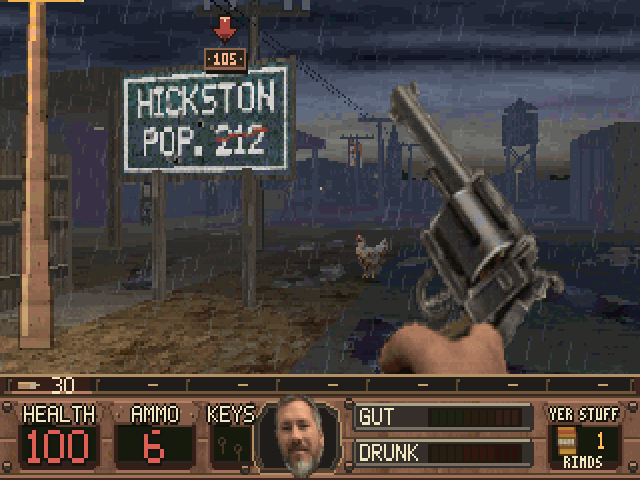

Stanky's Bar & Grill Play it right here

The first visit pulls about 78 MB (the title and Hickston); each later chapter rolls in while you play, and your browser keeps it all.
Open in its own tab
Click the screen to grab the mouse. Esc gives it back.
Fill 'er up Download station
Builds are made from the source by GitHub Actions.
WIN
Windows, standalone
One EXE. No install. Runs from anywhere.
SETUP
Windows, installer
Start-menu shortcuts and an uninstaller.
WEB
Play in browser
Nothing to install. Runs on this page, online play and all.
APK
Android
Thumb stick, fire, jump, duck, a flashlight, a whistle and a rind button.
The builds are unsigned. Windows SmartScreen will ask once; Android needs “install unknown apps” allowed for your browser or file manager. Playing online, everybody needs the same version. Every release · Source
Pick up the party line Bring your buddies
Title menu, MULTIPLAYER. Host a game and the county's party line hands you a short code like HKP-427; your friends type it in and they are in your lobby. No ports to open, no router settings: it works behind any router, on a phone and in the browser. Or pick PLAY ONLINE for the always-open county lobby, sixty updates a second, where nobody has to host, bots fill the empty places and the first one in runs the show. Every online game has proximity voice chat: turn MICROPHONE on under SETTINGS, AUDIO, then hold T to talk.
Posted on the feed store wall What's in it
Salvage & wrecking Things come apart
Everything in the county breaks the way it was hit: where the round landed, which way it pushed and what the thing was made of. Shoot the same barrel twice and it will not go the same way twice.
Hickston County Armory
Route sheet Chapter dossier
Tonight's main event Fight card
Nine bosses, nine arenas. Every one of them makes an entrance, talks trash, marks where the next hit lands, wears the beating it takes, wrecks its own arena as it goes, and at a fifth of its health gets plum desperate and turns the arena on everybody. Shoot the gear off them. When one goes down, the camera stays on the fall, slowed, before the tally. Die in a fight, or on the way up to one, and you are back at the arena door. Beat one and BOSS REMATCH on the title menu races you against the clock for a blue, red or white ribbon.
Two bits a song Jukebox
Now playingPick a record.
Forty-second cuts from the game's own soundtrack.
Holler board
Read before operating Field manual
Keyboard & mouse
| WASD + mouse | Move and aim |
|---|---|
| Shift J Z | Run, jump, crouch |
| Mouse 1 / Mouse 2 | Fire / alt fire |
| E Space middle click | Use, open, rescue; boot a man in front of you, finish a reeling one; hold it to haul a partner up |
| 1–9 0 - = \ wheel | Weapons |
| R | Reload |
| 8, hold fire | Light the stick; let go to throw |
| C B M | Pork rinds, beer, moonshine |
| Q / F | Pick an item / use it |
| G | Whistle for Blue: sic 'em, fetch, stay, come |
| L | Flashlight, when the power's out |
| Tab / P | County map / photo mode |
| F6 / F9 / F5 | Quicksave, quickload, save slots |
| F11 F4 F12 | Fullscreen, music, screenshot |
| T, held | Talk, online (push to talk) |
Every play key can be changed on SETUP's KEYS page, and CONTROLS on the menu names them as you set them. USE picks up loose junk; fire chucks it, alt fire sets it down.
Gamepad
| Left stick / right stick | Move / look |
|---|---|
| Right trigger / left trigger | Fire / alt fire |
| A / B | Jump / crouch |
| X / Y | Reload / use |
| Bumpers | Previous / next weapon |
| L3 / R3 (stick clicks) | Run / flashlight (R3 runs when there's no flashlight) |
| D-pad up, left, right | Rinds, beer, moonshine |
| D-pad down | Use the picked item |
| Start / Back | Pause / county map |
| Hold Back | Whistle for Blue |
| In menus | D-pad moves, A picks, B backs out |
Touch
FireUseAlt
NextJumpDuck
WhistleLightPhoto
RindBeerShine
MapMenu
Left thumb walks. Drag anywhere on the right half to aim. Hold USE to haul a partner or Blue up. LIGHT shows while there's a flashlight to work and WHISTLE while Blue is along; a tap on his badge whistles too. The buttons show up the first time a finger lands on the screen, stay out of the way on a keyboard, and SETUP can move them.